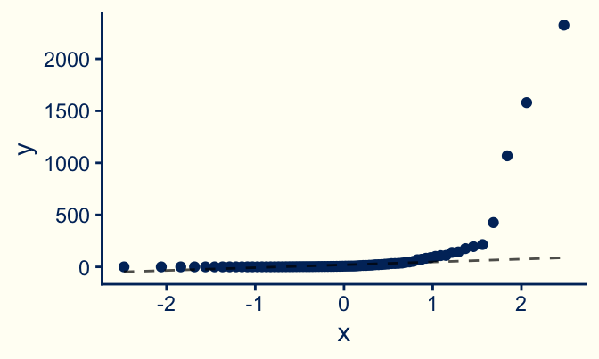
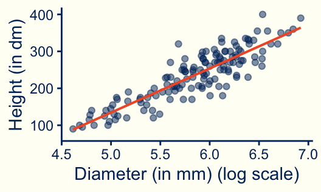
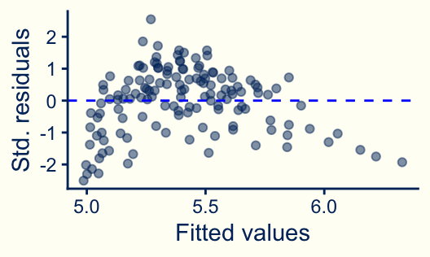

Remedial Measures: Transformations
Stat 230: Applied Regression Analysis
PDF version of slides
Easing skew
If a set of data values is skewed to the right, taking the (natural) log of each data value can result in a data set that is roughly symmetric and often roughly normal.




How are tree height and tree diameter related for the western red cedar?
Are the conditions violated?
Warning: Using the `size` aesthetic with geom_line was deprecated in ggplot2 3.4.0.
ℹ Please use the `linewidth` aesthetic instead.

linearity
constant errors
independent errors
normal errors
outliers
none
Does transforming X help?


Does transforming Y help?



Transforming both X and Y?


Your turn
Work through the first example on the handout with your neighbor(s)
Online version with R chunks:
Back-Transforming
Converting a transformed variable back to its original scale
Back-Transforming
Log scale
Registered S3 method overwritten by 'mosaic':
method from
fortify.SpatialPolygonsDataFrame ggplot2| mean |
|---|
| 2.146 |
Original scale
| mean |
|---|
| 98.558 |
- Back-transformed mean: \(e^{2.146} \approx 8.55\)
. . .
R Note
logis the natural logexp(x)calculated \(e^x\)
Displaying a transformed model
Warning: Using the `size` aesthetic with geom_ribbon was deprecated in ggplot2 3.4.0.
ℹ Please use the `linewidth` aesthetic instead.
Rules of thumb
transform x: if mean function is nonlinear, but is monotonic and the residual variance is constant
transform y: if mean function is nonlinear and the residual variance increases as the mean increases (log, reciprocal, or square root often work)
log rule: if values range over more than 1 order of magnitude and are strictly positive, then the natural log is likely helpful
range rule: if the range is considerably less than 1 order of magnitude, then transformations are unlikely to help
square roots are useful for count data
Ladder of transformations

Rule of the Bulge
Introduced by John Tukey and Frederick Mosteller for “straightening” data to better meet the assumption of linearity
Interpreting a log-transformed model
Back-Transforming
Log scale
| mean | median |
|---|---|
| 2.146 | 1.933 |
Original scale
| mean | median |
|---|---|
| 98.558 | 6.925 |
- Back-transformed median: \(e^{1.933} \approx 6.91\)
- Back-transformed mean: \(e^{2.146} \approx 8.55\)
Back-transforming log transformations
Often log-transforming a variable makes in approximately symmetric
If symmetric, then the median \(\approx\) mean on the log scale
\(\widehat{\mu}(Y|X) \approx \widehat{\text{median}}(Y|X)\)
Inference made mean on the log scale can thought of as inference for the median on the log scale
Log-transform of Y only
The median of \(Y\) at \(x + 1\) is \(e^\beta_1\) times larger (smaller) than the median of \(Y\) at \(x\).
Or… increasing \(x\) by 1 increases (decreases) the median of \(Y\) by a factor of \(e^\beta_1\).

Log-transform of X only
A doubling of \(x\) is associated with the mean response increasing (decreasing) by \(\beta_1 \log(2)\) units.

Log-transform both Y and X
The median of \(Y\) at \(2x\) is \(2^{\beta_1}\) times greater (smaller) than the median of \(Y\) at \(x\).
Or… A doubling of x is associated with the median of Y increasing (decreasing) by a factor of \(2^{\beta_1}\).

Your turn
You estimated the model \(\mu(\mathtt{brain\ weight}|\mathtt{body \ weight}) = \beta_0 + \beta_1 x\)
| term | estimate | std.error | statistic | p.value |
|---|---|---|---|---|
| (Intercept) | 2.190 | 0.176 | 12.439 | <0.001 |
| log(bodyweight) | 0.759 | 0.042 | 18.163 | <0.001 |
Interpret the slope in context
Interpret the intercept in context
Modeling is an iterative process

Issues with transformations
You’re often guessing — Statistics is an art AND a science!
Changes the interpretation of the parameters — need to back-transform to provide interpretable results
Changes SEs of the parameters
Not always easy to keep track of all your assumptions